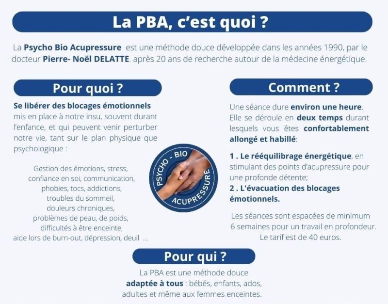
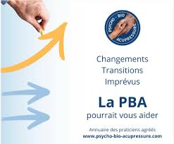

Une approche douce qui relie corps et émotions.
Prendre rendez-vous
La Psycho-Bio-Acupressure est une méthode douce qui associe stimulation
de points corporels et accompagnement émotionnel pour favoriser le bien-être.
Le praticien active, par de légères pressions, cinq points d’acupressure successifs.
Ce geste simple trace un véritable circuit, à la fois dans le corps et dans le cerveau.
Dans un second temps, il s’attache à libérer les blocages émotionnels identifiés.
Nos émotions laissent des traces inconscientes mais actives.
Le travail consiste à accéder à ces informations et à les traiter pour retrouver équilibre et potentiel.
Une première approche pour comprendre vos besoins et découvrir les bienfaits de la PBA.
Apaiser les tensions et retrouver du calme dans votre quotidien.

Travail en profondeur sur les blocages émotionnels. Identifier, verbaliser et libérer les tensions pour un changement durable.
Un accompagnement adapté pour traiter les causes émotionnelles en douceur.
“Une vraie sensation d’apaisement après chaque séance.”